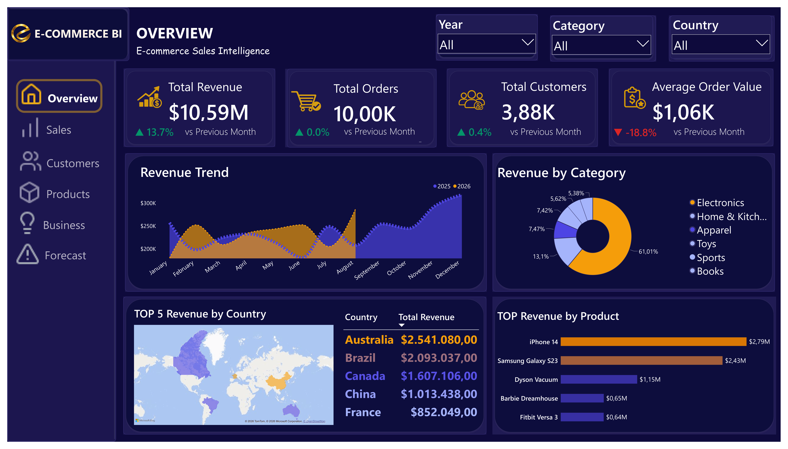
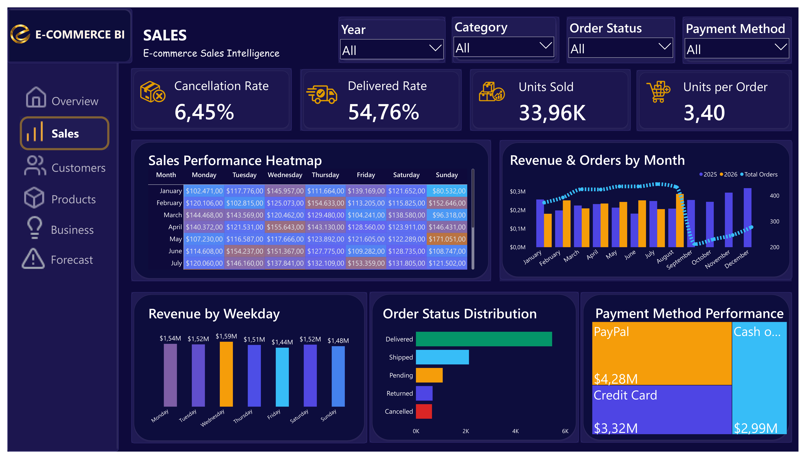
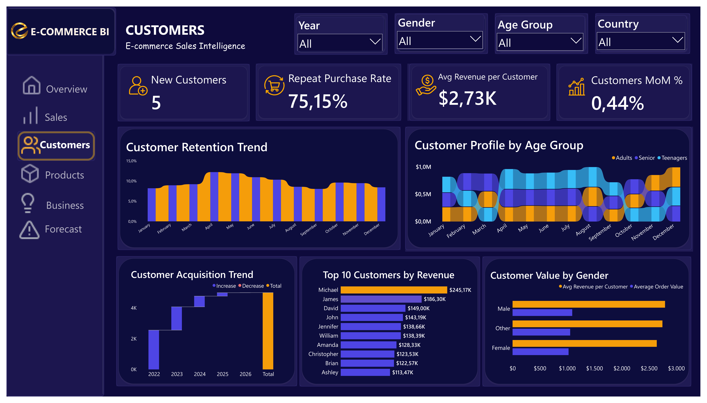
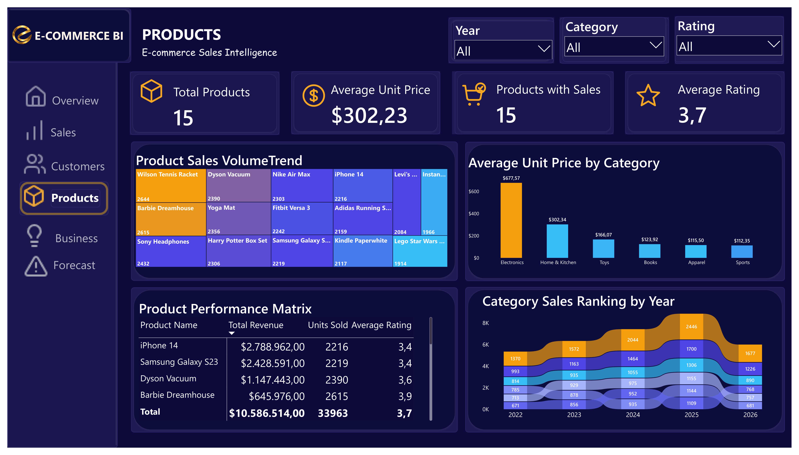
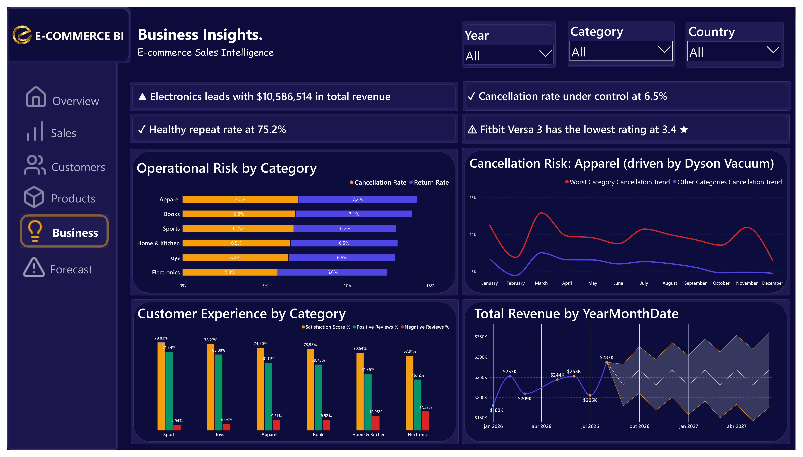
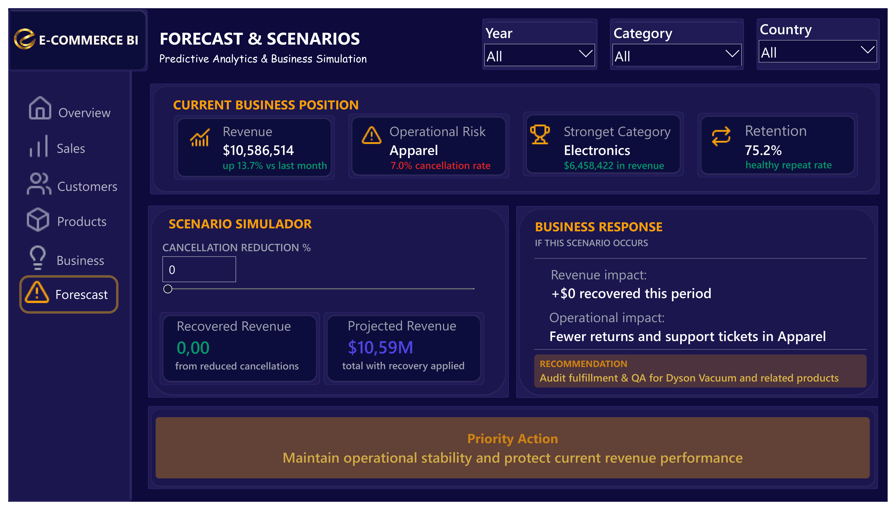

Overview
Executive summary of revenue, orders, customers and overall business performance.
An executive Power BI solution that turns transactional e-commerce data into decisions — across sales performance, customer behavior, product performance and operational risk.

The project combines data modeling, transformation, DAX and interactive Power BI visualizations to provide a clear view of e-commerce performance.
Turn transactional e-commerce data into clear, decision-ready information about sales performance, customer behavior, products and operational risk.
A six-page Power BI analytical solution built with a star schema, Power Query transformations and DAX measures.
Sales, customers, products, operational risk and business scenarios designed to support better decisions.
A short demonstration showing filters, dynamic insights and the cancellation-reduction scenario simulator.
Each page answers a different business question while maintaining a consistent analytical narrative.

Executive summary of revenue, orders, customers and overall business performance.

Sales trends, payment methods, order behavior and operational performance over time.

Customer value, revenue contribution and purchasing behavior.

Product performance, pricing, sales activity and customer ratings.

Identifies operational risks, customer experience signals and category-level opportunities.

Uses scenario simulation to evaluate the potential revenue impact of reducing cancellations.
The dashboard is designed to move beyond reporting and highlight signals that can support business action.
Electronics generates the strongest revenue contribution within the analyzed product categories.
Category-level analysis highlights Electronics as an important area for operational risk monitoring.
The repeat purchase rate indicates a strong level of returning customer activity.
Customer ratings help identify products that may require further investigation.
The solution combines structured data modeling, transformation and business-oriented DAX.
The dashboard provides a structured way to understand how sales performance, customers, products and operational risks interact.
Instead of presenting isolated KPIs, the project connects performance indicators with business context and scenario analysis.
The result is an executive-oriented analytical solution that can help identify where attention should be focused and how operational changes could affect revenue.
View the project source and return to the complete portfolio.